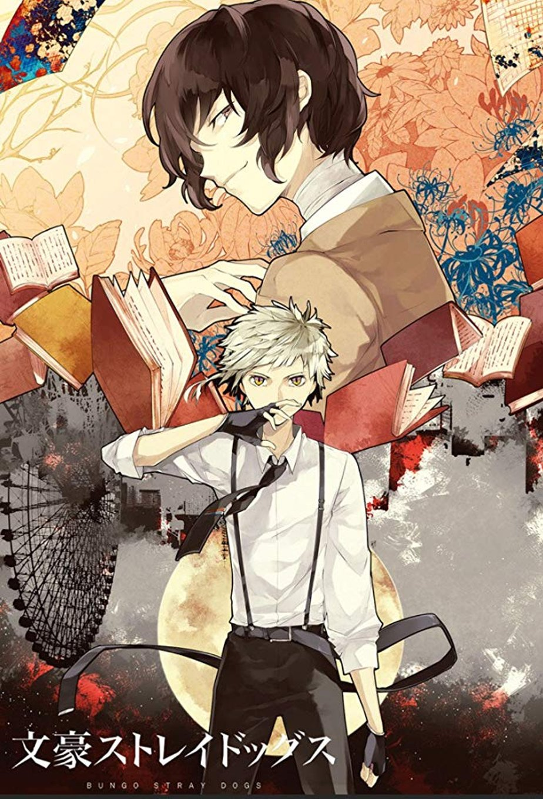
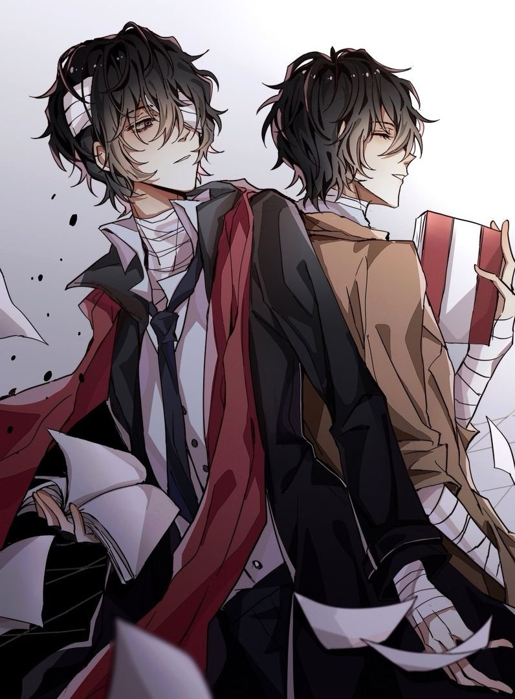

У світі живуть люди з надприродними здібностями, яких називають есперами. Вони об'єднуються у групування заради досягнення своїх часом небезпечних цілей. У портовому містечку Йокогаме борються дві великі організації есперів: Збройне Детективне Агентство та Портова Мафія. Юного сироту Ацуші виганяють із притулку, і він примикає до Детективного Агентства, поступово навчаючись впоратися зі своєю здатністю, контролювати її та боротися з ворогами. Адже виживати у світі магії та влади дуже непросто, особливо, якщо ти — об'єкт глузувань і переслідувань…
Герої — те, що прикрашає цей тайтл більше, ніж решта складових. Отже, практично кожен персонаж створений немає від балди, і з продуманістю і обачністю. Мало того, що у кожного героя є певна роль у сюжеті, за кожним з них стоїть могутній прототип в особі літературного генія. Так, ви не дочули: натхненням для промальовування персонажів стали реальні особистості: поети та письменники з різних країн. З так званого попередника змальовували надздібність, манеру поведінки і певною мірою характер кожного персонажа. Більше того, їхня трансформація носить назву відомого твору автора, який став їх прототипом, а здібності так чи інакше пов'язані з його творчим нароботком чи життям. Це певною мірою викликає інтерес не лише до самого героя, але й до його прототипу, його творчості та літератури певного періоду чи країни загалом, а отже має ще й освітню місію.
У нас є дві команди — Детективне Агентство та Портова Мафія (хоча з кожною серією противників буде більше, це я просто попереджаю) і є конфлікт між ними. Логічно, що тут на когось буде навішаний ярлик святенників, а хтось стане головним лиходієм. Але, хоча за сюжетом ми на боці Ацуші та його колег, члени мафії не сприймаються ними як велике зло. Більше того, нам показують, що і детективи не ідеальні, у них є свої слабкі місця і темне минуле, але так сталося, що вони борються за все добре і проти всього поганого, а мафіозі не люблять дисципліну і їх доводиться карати. Цей прийом дозволяє глядачеві одночасно вболівати за героїв із різних команд, (а-ля Дазай та Чуя) плюс, так персонажі не виглядають однобоко.